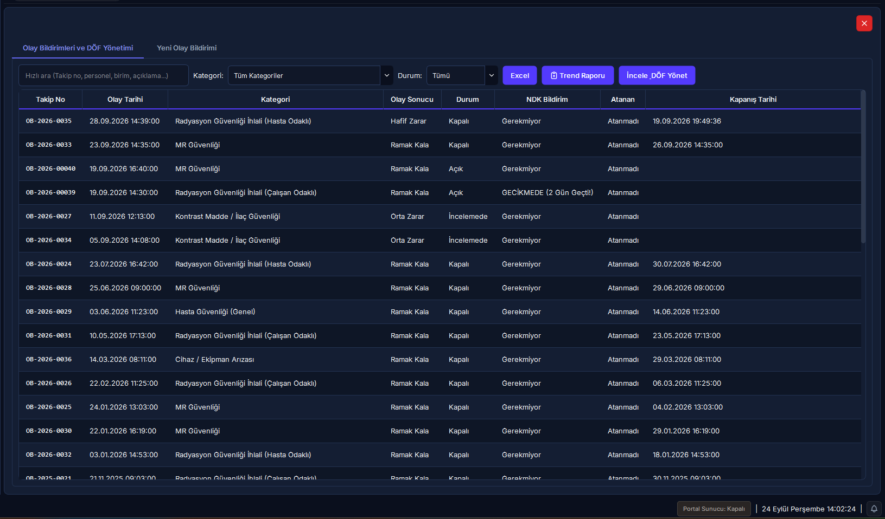
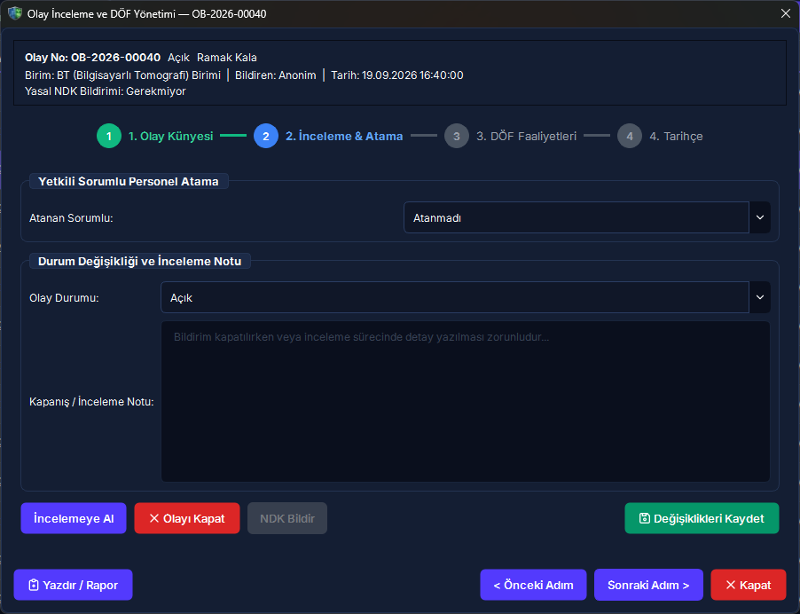
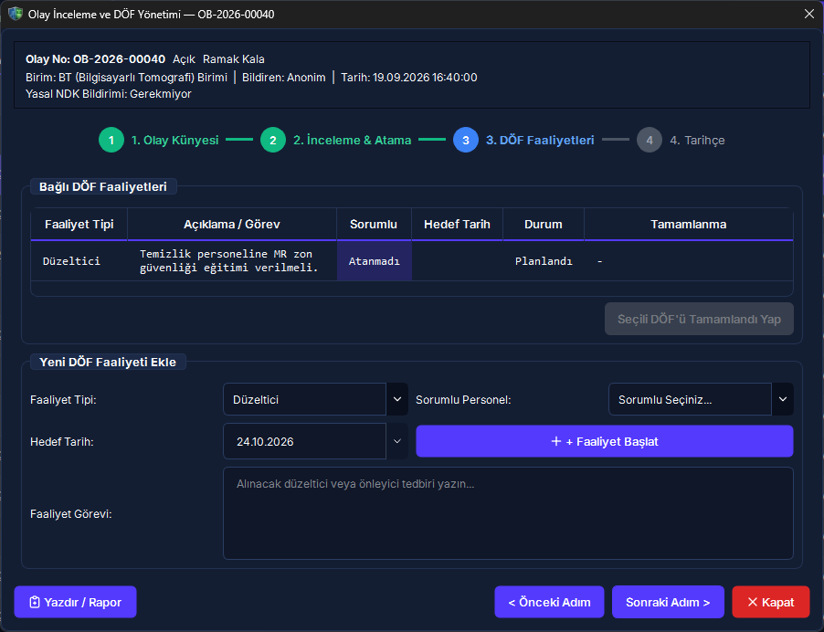
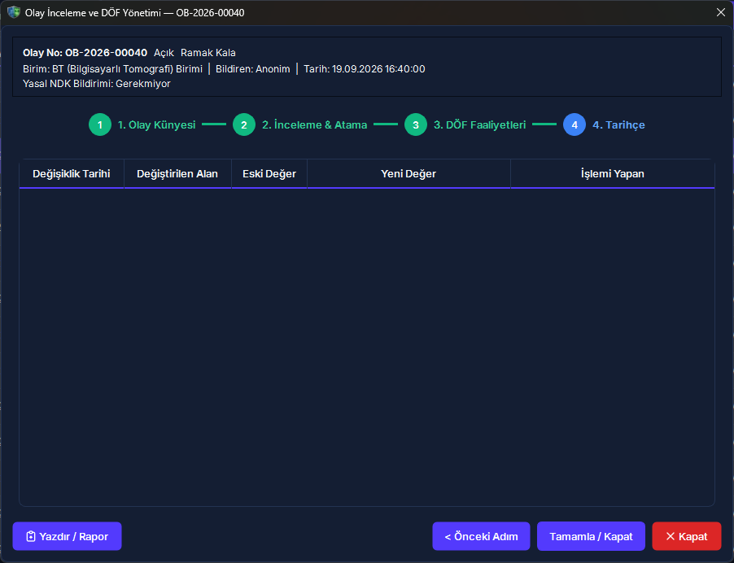

15. Olay Bildirimi ve DÖF (CAPA)
Radyasyon alanlarında meydana gelen kazaları, ramak kala olayları ve uygunsuzlukları SKS 6.1 uyumlu 3 adımlı sihirbazla kayıt altına alan, ana listeden doğrudan veya bağımsız Düzeltici Önleyici Faaliyet (DÖF) başlatan, 72 saatlik NDK yasal bildirim geri sayımını yürüten, 4 adımlı doğal inceleme akışıyla sorumlu atayan, açık aksiyonlar tamamlanmadan olayın kapatılmasını engelleyen ve resmi tek sayfalık SKS/NDK tutanağı üreten kurumsal kalite modülüdür.
Vizyonder Hızlı Karar Reçetesi (Olay & DÖF Özeti)
7 DÖF (CAPA) Faaliyetleri: Olaya Bağlı ve Bağımsız Kalite Yönetimi
Düzeltici ve Önleyici Faaliyetler (DÖF), hem inceleme sihirbazının 3. Adımından hem de ana listenin araç çubuğundaki [Yeni DÖF Ekle] butonundan başlatılabilir:
DÖF penceresinde yer alan "İlişkili Olay Bildirimi" açılır kutusu sayesinde faaliyet açık bir olaya bağlanabilir veya (Bağımsız / Genel Kalite Faaliyeti — Olay Bildirimi Yok) seçeneğiyle kurum genelindeki önleyici iyileştirmeler için serbestçe işletilebilir.
Görevlendirilecek personel unvan ve birim bilgisiyle seçilir, faaliyet tipi (Düzeltici, Önleyici, İyileştirici) ve termin tarihi atanır. DÖF takip tablosuna eklenen "İlişkili Olay" sütunuyla tüm aksiyonlar şeffafça izlenir.
8 Açık DÖF Kapatma Emniyet Kilidi ve Zorunlu Kapanış Notu
SKS 6.1 ve kalite denetim standartları gereğince uygunsuzluklar önlemleri tamamlanmadan kağıt üzerinde kapatılamaz:
Açık DÖF Emniyet Kilidi (CAPA Closure Guard)
İnceleme sihirbazının 4. Adımı açıldığında sistem bağlı DÖF faaliyetlerini sorgular. Eğer tamamlanmamış en az 1 DÖF varsa kapatma butonu kilitlenir ve kullanıcı DÖF sekmesine yönlendirilir. Tüm DÖF faaliyetleri başarıyla sonuçlandırıldığında ekran yeşil onay verir; zorunlu nihai kalite ve kapanış notu girilerek [Olayı Kapat ve Tamamla] butonuyla olay güvenle resmi "Kapalı" statüsüne alınır. Kapanış tarihi ana listeye anında yansıtılır.
9 Cihaz Arıza & Kurum İçi İstatistik Takibi
Olay bildirimi tıbbi bir cihazın teknik arızasından kaynaklanmışsa (ilgili_cihaz_id):
- Süreç ve İstatistik Amacı: Sistem olay üzerinden teknik arıza izleme kaydı oluşturur. Bu kayıt, harici bir teknik servise veya bakım firmasına resmi çağrı göndermez; kurum içinde Radyasyon Güvenliği Komitesinin arıza-kaza korelasyonunu ve birim istatistiklerini takip etmesi içindir.
- DÖF Referansı: Olay DÖF tablosuna otomatik olarak "Cihaz arıza kaydı açıldı (#Arıza ID)" referansı eklenerek şeffaf takip sağlanır.
10 Resmi SKS / NDK Olay ve DÖF Tutanağı (Kurumsal Antetli PDF)
Herhangi bir olayın resmi kalite dosyasını üretmek veya inceleme tamamlandığında resmi tutanak almak için [Resmi Tutanağı Yazdır / PDF] butonuna tıklayın:
- SKS 6.1 ve NDK Uyumlu Kurumsal Antet: Formun en üstünde kurum logosu, kurum adı, kalite birimi başlığı ve resmi doküman takip kartı (Doküman No, Revizyon Tarihi ve Sayfa No) yer alır.
- Renkli Klinik Rozetler ve NDK Uyarı Şeridi: Olayın sonucu (Ramak Kala, Hafif/Ciddi Zarar) ve yasal NDK 72 saatlik bildirim durumu resmi denetimlerde ilk bakışta fark edilebilecek şık rozetlerle vurgulanır.
- Tek Sayfaya Tam Oturan Düzen: Tüm olay künyesi, acil müdahale, DÖF planı ve yetkili imza kutuları (Bildiren, İnceleyen Uzman ve RKS/RSO) sayfa taşması ve imza parçalanması olmadan tek bir A4 sayfasına estetik ve eksiksiz olarak sığdırılmıştır.
- Doğru İşe Tek Format Standardı: Resmi evrak niteliği taşıdığı için doğrudan antetli, mühürlü ve değiştirilemez PDF formatında üretilir.
11 Hibrit Saha Mobil Formu ve Web Portalı
RADPYS Olay Bildirimi ve DÖF modülü, masaüstü kurumsal yönetim ile saha mobil web portalının tam entegrasyonuyla çalışır:
Klinikteki teknisyen, hemşire veya fizikçi cep telefonu veya tabletinden 3 adımlı formu açarak kazayı veya ramak kala durumunu anında bildirir. Kayıt sunucuya iletildiği anda yönetici ekranında bildirim düşer.
Kalite direktörleri ve hastane yönetimi web portalı üzerinden toplam olay, bekleyen DÖF'ler, çözülen vakalar, NDK bekleyenler sayaçlarını ve aylık olay trend çizgi grafiklerini canlı takip eder.
Ekran Konumları ve Görsel Rehber




12 Karar ve İş Akış Şeması (Mermaid)
Olay bildiriminin açılışından NDK yasal süre takibine, DÖF atamasından açık DÖF kapatma kilidine kadar olan operasyonel yaşam döngüsü:
Olay Bildirimi, DÖF & Mit Avcısı (Kritik Kurallar)
"Açık bir DÖF faaliyeti varken de olayın dosyası acilen 'Kapatıldı' statüsüne geçirilebilir."
CAPA Lock emniyet kilidi gereğince üzerinde tamamlanmamış açık DÖF aksiyonu bulunan hiçbir olay kapatılamaz. Faaliyetlerin resmi olarak tamamlanması veya gerekçeli iptali zorunludur.
"Personelin ismini gizleyerek yaptığı anonim ramak kala bildirimleri SKS denetimlerinde geçersizdir."
Sağlık Bakanlığı SKS 6.1 ve güvenlik kültürü ilkeleri gereğince anonim bildirimler resmi ve yasal olarak geçerlidir; aynı ciddiyetle incelenip düzeltici işlem başlatılır.
"Olay formunda cihaz arızası kaydedildiğinde sistem yetkili teknik servise otomatik iş emri açar."
Bu kayıt kurum içinde olay-arıza korelasyonunu takip etmek içindir; harici servise çağrı göndermez. Cihaz bakım ve servis yönetimi Modül 19 üzerinden yürütülür.
13 Sıkça Sorulan Sorular (SSS)
Anonim yapılan bildirimler resmi SKS denetimlerinde geçerli sayılır mı?
Açık DÖF varken bir olayı acilen kapatmam gerekirse ne yapmalıyım?
Sistem açık DÖF varken olayın kapatılmasını emniyet kilidiyle kesinlikle engeller. Eğer bir faaliyet artık uygulanamaz durumdaysa veya mükerrer açılmışsa, faaliyet durumu gerekçesi belirtilerek İptal veya Tamamlandı yapılmalı, ardından kapanış notu girilerek olay kapatılmalıdır.
Olaydan oluşturulan cihaz arıza kaydı teknik servise otomatik iş emri gönderir mi?
NDK bildirim süresi ne zaman başlar ve hafta sonları hesaba katılır mı?
Yasal süre olay tarihinden itibaren başlar. Acil kazalarda 1 iş günü (24 saat), diğer radyolojik uygunsuzluklarda 3 iş günüdür. Hesaplamada Cumartesi ve Pazar günleri ile resmi tatiller süreye dahil edilmez (_add_business_days).